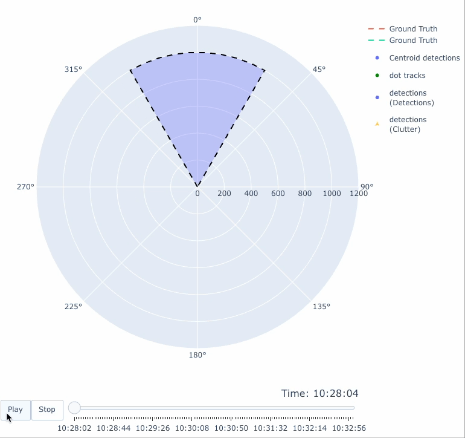
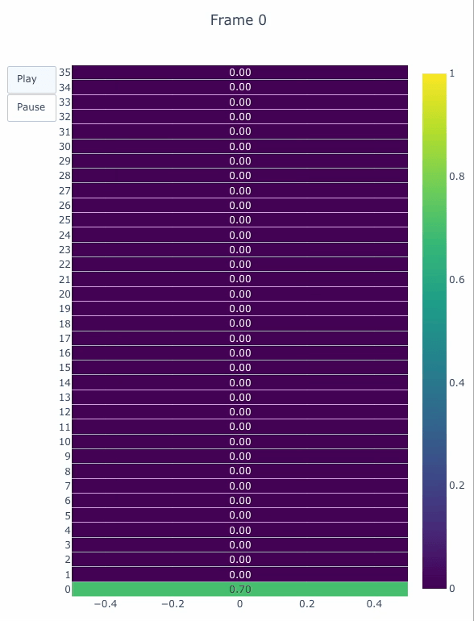

Master's Research: Information-Theoretic Radar Scheduling
June 20, 2025


Project Summary
Research on radar resource management under uncertainty, combining Bayesian target tracking, probabilistic occupancy modeling, and information-theoretic scheduling in a Python simulation environment.
Overview
This project was conducted as part of a research collaboration between SAAB and Syracuse University. The objective was to investigate radar resource management (RRM) using probabilistic modeling, Bayesian estimation, and information theory.
Radar systems operate under limited sensing resources and must decide how to allocate observations between tracking known targets and searching for previously undetected targets. This presents a sequential decision-making problem under uncertainty: the radar must choose where to observe while accounting for incomplete knowledge of target locations, motion, and the environment.
My research focused on developing a simulation environment for investigating this problem and exploring information-theoretic criteria for adaptive radar scheduling.
GitHub Repository
View the source code on GitHub
What I Did
Radar Simulation and Target Tracking
I developed and worked with a Python radar simulation environment using Stone Soup, an open-source framework for target tracking and state estimation.
The simulation modeled moving targets, radar observations, and target-state estimation using Extended Kalman filtering (EKF).
The estimated target states and covariance matrices provided probabilistic information about target locations and their uncertainty, which could be used to inform subsequent radar observations.
Probabilistic Range-Cell Modeling
I investigated methods for representing uncertainty over the radar's surveillance region.
The region was divided into range cells, with each cell associated with a probability of target occupancy.
For a range cell \(i\), I considered the probability
where \(X_i\) is a binary random variable indicating whether the cell is occupied.
One approach involved using Monte Carlo sampling from predicted Gaussian target-state distributions to approximate the probability that a target would occupy a particular range cell.
I also explored Bayesian probability updates following detections and non-detections, along with mechanisms for propagating occupancy probabilities between observations.
Information-Theoretic Radar Scheduling
A central part of the research involved investigating expected information gain (EIG) as a criterion for radar resource allocation.
The underlying idea was to prioritize observations according to their expected reduction in uncertainty.
For a binary occupancy variable, uncertainty can be measured using binary entropy:
The expected information gain associated with a radar observation can be written as
where \(X\) represents the uncertain state and \(Z\) represents a possible radar observation.
I investigated how this criterion could be applied to scanning unobserved regions and updating existing target tracks.
Approach
The research followed several connected stages:
- State estimation: Use target-tracking models to estimate target states and associated uncertainty.
- Spatial probability representation: Map predicted target distributions into probabilistic range-cell occupancy estimates.
- Information-theoretic evaluation: Investigate the expected reduction in uncertainty associated with candidate radar observations.
- Action selection: Explore how information-based criteria could guide radar scanning and tracking decisions.
- Model refinement: Examine undesirable scheduling behavior and investigate alternative objective functions.
An important aspect of the research was understanding the relationship between the mathematical objective and the behavior it encouraged in the simulated radar system.
Research Observations and Limitations
During development, I encountered several limitations of using expected information gain as a standalone scheduling objective.
In particular:
- Maximizing expected information gain did not necessarily prioritize the cells with the greatest current uncertainty.
- Detection probabilities and the observation model substantially influenced the expected value of scanning a cell.
- The initial formulation could produce undesirable scheduling patterns, including abrupt changes in radar direction.
- Combining information measures for continuous target-state distributions and discrete occupancy variables required careful treatment, since differential entropy and discrete entropy are not directly comparable.
These observations motivated further investigation into a broader utility-based scheduling formulation.
I explored incorporating additional factors such as revisit time, detection probability, uncertainty, and radar dwell time into the decision objective.
I also investigated probabilistic prediction mechanisms intended to account for changes in occupancy between radar observations.
These extensions were exploratory rather than comprehensively implemented and validated.
Although the simulation was functional, the project concluded before I could conduct a systematic experimental comparison of scheduling policies. Consequently, I do not claim that the proposed approaches improved tracking accuracy or radar resource efficiency relative to established baselines.
Future Directions
Several natural extensions of this work include:
- Evaluating information-theoretic scheduling policies against simpler baseline strategies.
- Investigating longer-horizon planning rather than purely myopic action selection.
- Formulating radar resource management as a Markov decision process (MDP) or partially observable Markov decision process (POMDP).
- Studying the tradeoffs between tracking uncertainty, target detection, revisit frequency, and sensing costs.
- Developing more realistic target-motion and radar-observation models.
This project helped develop my interest in probabilistic modeling, information theory, and sequential decision-making under uncertainty, particularly in applications where mathematical objectives must be translated into effective decisions.